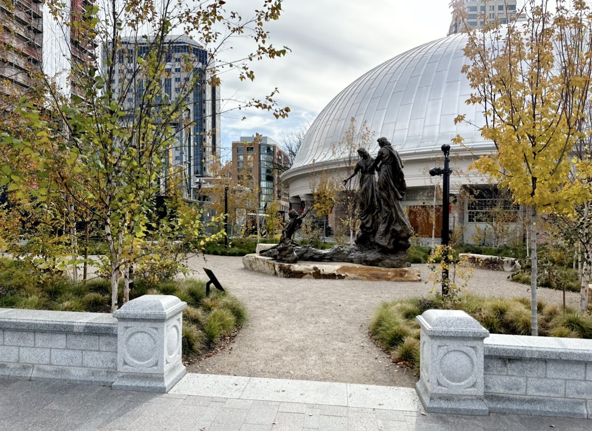
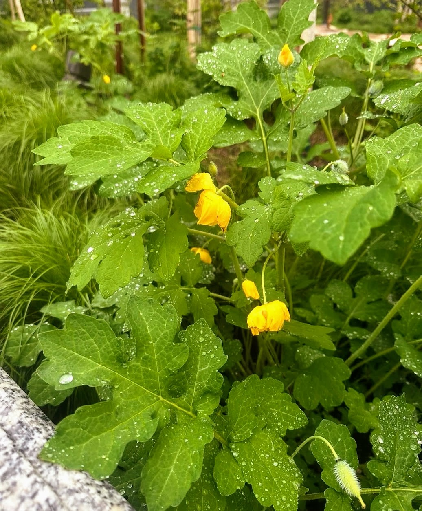
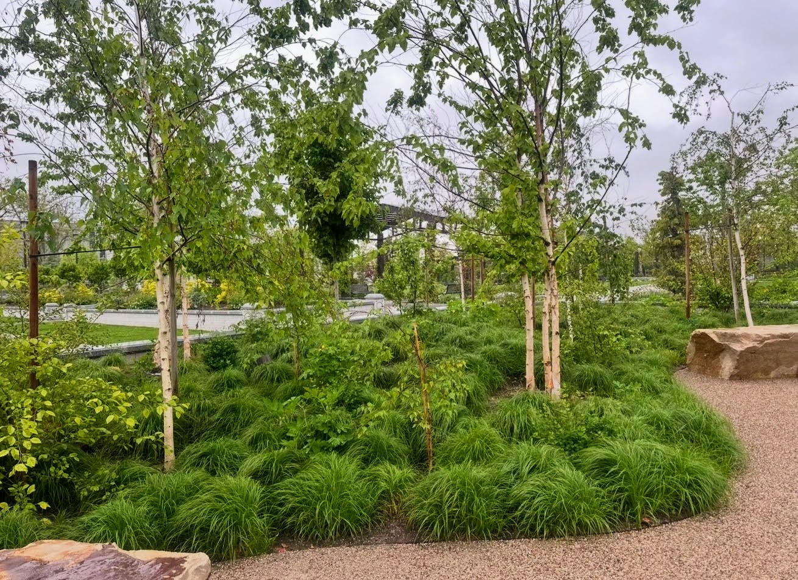
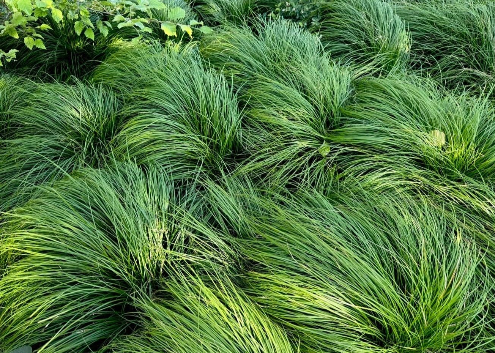
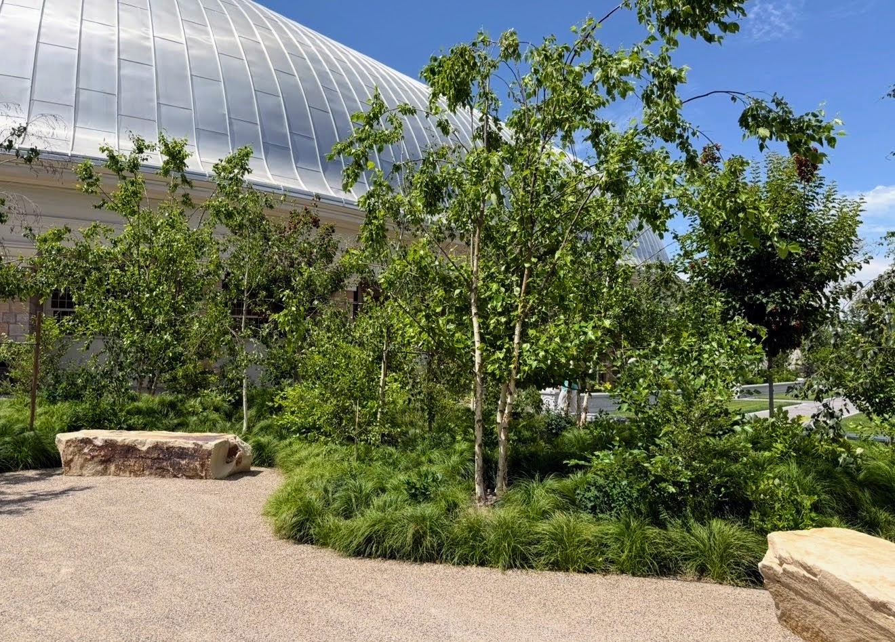
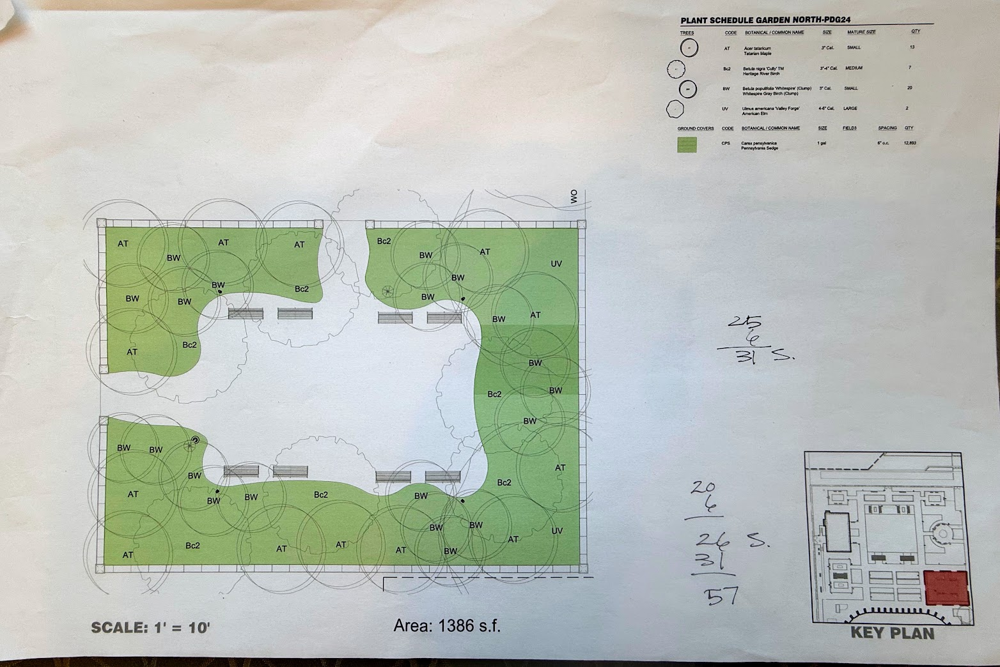
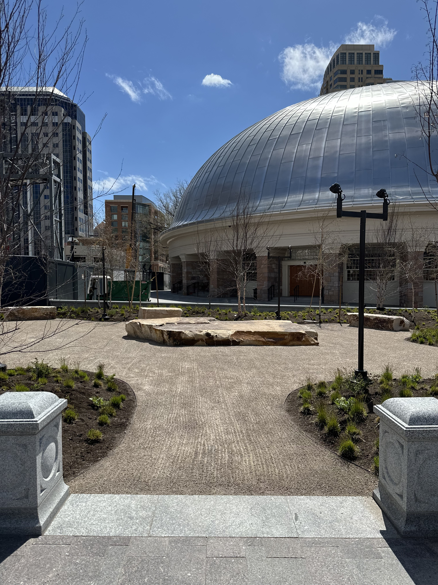

The place
Set apart from Temple Square's more formal display beds, Sacred Grove is a quiet counterpoint — a planting of native trees, grasses, and woodland flowers meant to feel found rather than designed, tucked within sight of the temple itself.
The brief
Where the rest of the grounds are planted for spectacle, the brief here asked for restraint — a grove that reads as a remnant of native woodland rather than another display bed, a place to slow down within a site built for crowds.
The design
The grove changes slowly through the year — bare and structural in winter, dense with woodland flowers by spring, and given over to color each fall. Native grasses and woodland poppy carry the understory, planted loosely enough to seed and drift the way they would in an actual wood.
A path threads through rather than around the planting, so a walk through the grove means walking among the grasses and flowers, not simply past them.






